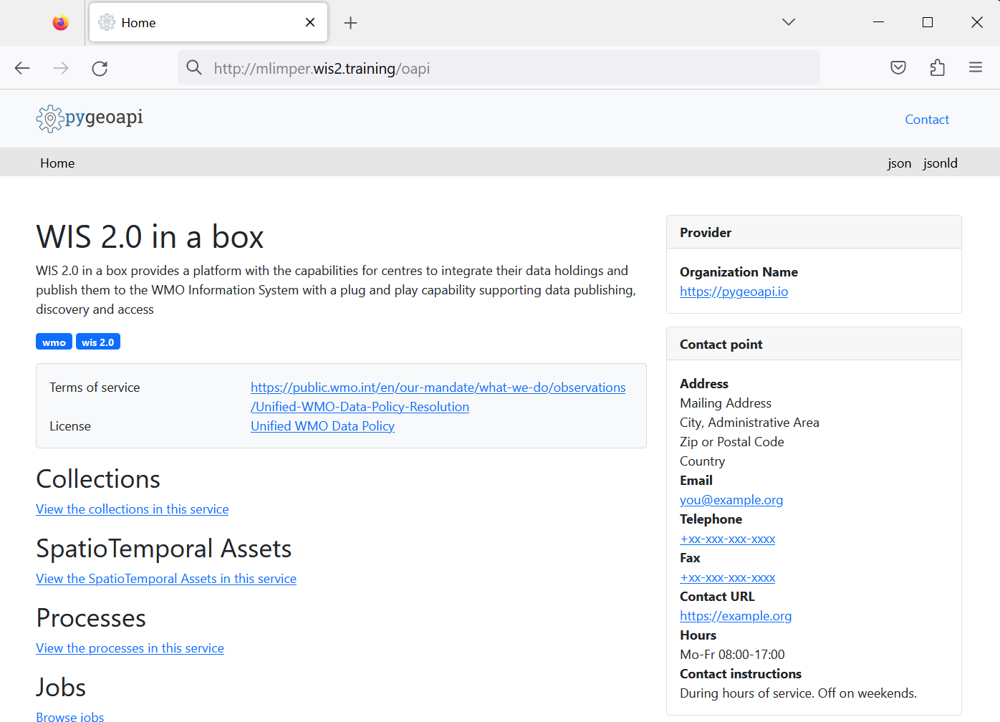
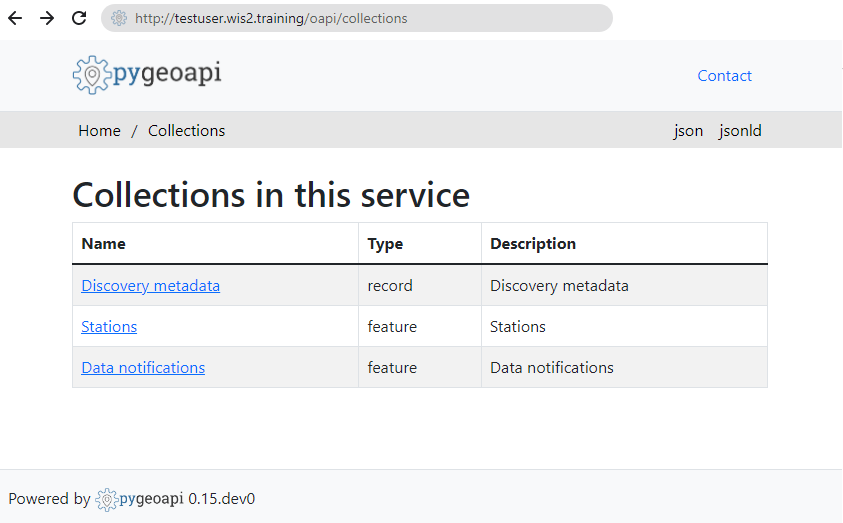
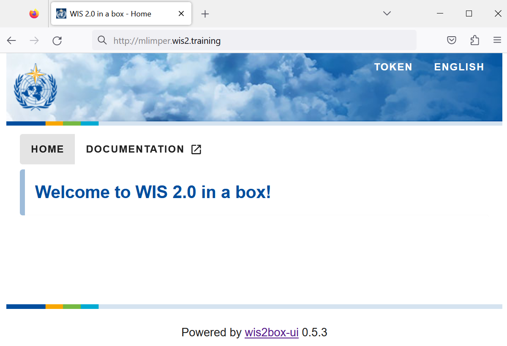
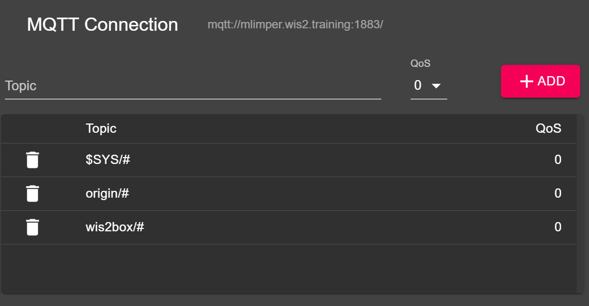
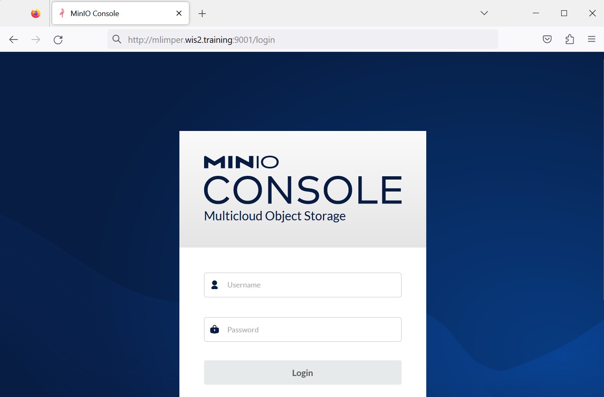
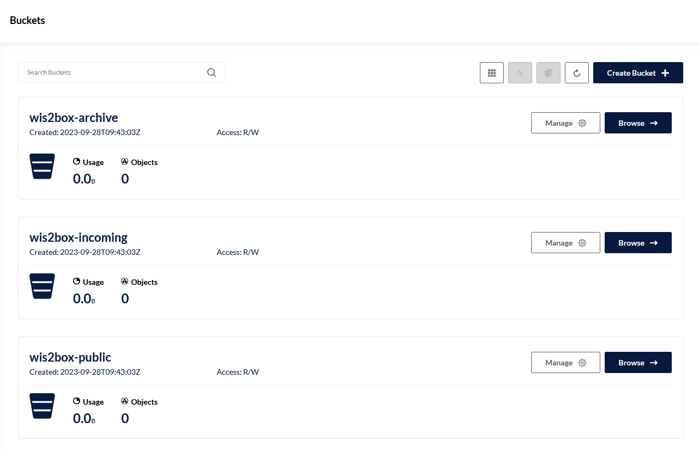
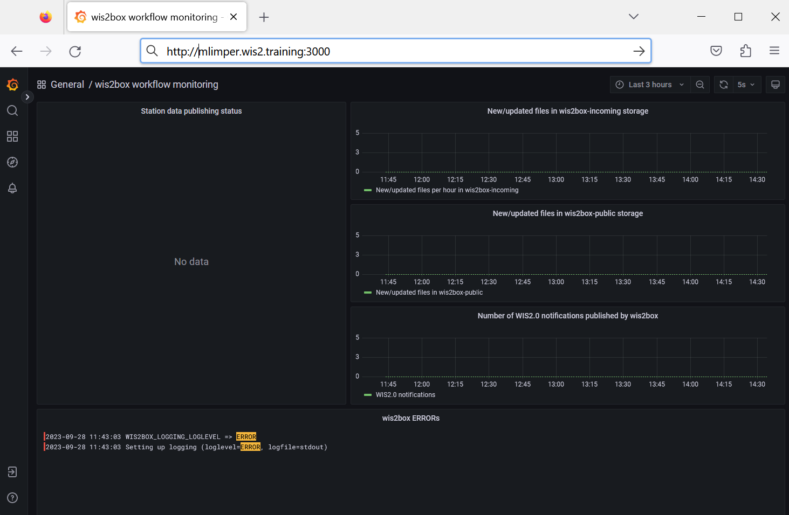

Initializing wis2box
Learning outcomes
By the end of this practical session, you will be able to:
- run the
wis2box-create-config.pyscript to create the initial configuration - start wis2box and check the status of its components
- access the wis2box-webapp, API, MinIO UI and Grafana dashboard in a browser
- connect to the local wis2box-broker using MQTT Explorer
Note
The current training materials are using wis2box-1.0b5.
See accessing-your-student-vm for instructions on how to download and install the wis2box software stack if you are running this training outside of a local training session.
Preparation
Login to your designated VM with your username and password and ensure you are in the wis2box-1.0b5 directory:
cd ~/wis2box-1.0b5
wis2box-create-config.py
The wis2box-create-config.py script can be used to create the initial configuration of your wis2box.
It will ask you a set of question to help setup your configuration.
You will be able to review and update the configuration files after the script has completed.
Run the script as follows:
python3 wis2box-create-config.py
wis2box-data directory
The script will ask you to enter the directory where your configuration and data will be stored.
We recommend you use the directory wis2box-data in your home directory to store your configuration and data.
Note that you need to define the full path to this directory.
For example if your username is mlimper, the full path to the directory is /home/mlimper/wis2box-data:
mlimper@student-vm-mlimper:~/wis2box-1.0b5$ python3 wis2box-create-config.py
Please enter the directory on the host where wis2box-configuration-files are to be stored:
/home/mlimper/wis2box-data
Configuration-files will be stored in the following directory:
/home/mlimper/wis2box-data
Is this correct? (y/n/exit)
y
The directory /home/mlimper/wis2box-data has been created.
wis2box URL
Next, you will be asked to enter the URL for your wis2box. This is the URL that will be used to access the wis2box web application, API and UI.
Please use http://<your-hostname> as the URL. Remember that your hostname is defined by your username.wis2.training
Please enter the URL of the wis2box:
For local testing the URL is http://localhost
To enable remote access, the URL should point to the public IP address or domain name of the server hosting the wis2box.
http://mlimper.wis2.training
The URL of the wis2box will be set to:
http://mlimper.wis2.training
Is this correct? (y/n/exit)
STORAGE and BROKER passwords
You can use the option of random password generation when prompted for WIS2BOX_STORAGE_PASSWORD and WIS2BOX_BROKER_PASSWORD or define your own.
Don't worry about remembering these passwords, they will be stored in the wis2box.env file in your wis2box-1.0b5 directory.
Country code and centre-id
Next you will be asked for the 3-letter ISO code for your country and centre-id for your wis2box. The centre-id can be a string of your choosing for the purpose of this training.
Please enter your 3-letter ISO country code:
nld
Please enter the centre-id for your wis2box:
maaike_test
The country-code will be set to:
nld
The centre-id will be set to:
maaike_test
Is this correct? (y/n/exit)
Discovery metadata
Next you will answer a set of question to generate discovery metadata templates for your wis2box. The answers do not need to be correct for the purpose of this training.
********************************************************************************
Creating initial configuration for surface and upper-air data.
********************************************************************************
Please enter the email address of the wis2box administrator:
mlimper@wmo.int
The email address of the wis2box administrator will be set to:
mlimper@wmo.int
Is this correct? (y/n/exit)
n
Please enter the email address of the wis2box administrator:
me@gmail.com
The email address of the wis2box administrator will be set to:
me@gmail.com
Is this correct? (y/n/exit)
y
Please enter the name of your organization:
Maaike-TEST
Your organization name will be set to:
Maaike-TEST
Is this correct? (y/n/exit)
y
Getting bounding box for "nld".
bounding box: -68.6255319,11.825,7.2274985,53.744395.
Do you want to use this bounding box? (y/n/exit)
y
Created new metadata file: /home/mlimper/wis2box-data/metadata/discovery/metadata-synop.yml
Created new metadata file: /home/mlimper/wis2box-data/metadata/discovery/metadata-temp.yml
We will review the discovery metadata templates in a later session.
review configuration
Once the scripts is completed check the contents of the wis2box.env file in your current directory:
cat ~/wis2box-1.0b5/wis2box.env
Or check the content of the file via WinSCP.
Question
What is the value of the WIS2BOX_STORAGE_DATA_RETENTION_DAYS environment variable in the wis2box.env file?
Click to reveal answer
The default value for WIS2BOX_STORAGE_DATA_RETENTION_DAYS is 30 days. You can change this value to a different number of days if you wish.
The wis2box-management container runs a cronjob on a daily basis to remove data older than the number of days defined by WIS2BOX_STORAGE_DATA_RETENTION_DAYS from the wis2box-public bucket and the API backend:
0 0 * * * su wis2box -c "wis2box data clean --days=$WIS2BOX_STORAGE_DATA_RETENTION_DAYS"
Note
The wis2box.env file contains environment variables defining the configuration of your wis2box. For more information consult the wis2box-documentation
Next, check the contents of the data-mappings.yml file in your wis2box data directory:
cat ~/wis2box-data/data-mappings.yml
Or check the content of the data-mappings.yml via WinSCP by browsing to the new directory 'wis2box-data' (click refresh if you don't see it yet)
Question
How many different keys are defined for data in the data-mappings.yml file?
Click to reveal answer
There are 2 different 'data'-keys defined in the data-mappings.yml file, one for surface-based observations and one for upper-air observations:
- nld.maaike_test.data.core.weather.surface-based-observations.synop
- nld.maaike_test.data.core.weather.upper-air-observations.temp
The country-code and centre-id will be different from the example above, they will be set to the values you entered during the wis2box-create-config.py script.
You can also note that different 'plugins' are defined for the different data types. The use of these plugins in the wis2box data pipeline architecture will be discussed in a later session.
Note
The data-mappings.yml file defines the plugins used to transform your data. For more information see data pipeline plugins in the wis2box-documentation
wis2box start and status
Ensure you are in the directory containing the wis2box software stack:
cd ~/wis2box-1.0b5
Start wis2box with the following command:
python3 wis2box-ctl.py start
Inspect the status with the following command:
python3 wis2box-ctl.py status
Repeat this command until all services are up and running.
wis2box and Docker
wis2box runs as a set of Docker containers managed by docker-compose.
The services are defined in the various docker-compose*.yml which can be found in the ~/wis2box-1.0b5/ directory.
The Python script wis2box-ctl.py is used to run the underlying Docker Compose commands that control the wis2box services.
wis2box API
Open a new tab and navigate to the page http://<your-host>/oapi.

This is the wis2box API (running via the wis2box-api container).
Question
What collections are currently available?
Click to reveal answer
To view collections currently available through the API, click View the collections in this service:

The following collections are currently available:
- Discovery metadata
- Station metadata
- Data notifications
Question
How many data notifications have been published?
Click to reveal answer
Click on "Data notifications", then click on Browse through the items of "Data Notifications".
You will note that the page says "No items" as no Data notifications have been published yet.
wis2box webapp
Open a web browser and visit the page http://<your-host>/wis2box-webapp:

This is the (new) wis2box web application to enable you to interact with your wis2box:
- ingest ASCII and CSV data
- update/review your station metadata
- monitor notifications published on your wis2box-broker
We will use this web application in a later session.
wis2box UI
Open a web browser and visit the page http://<your-host>:

The wis2box UI will display your configured datasets. The UI is currently empty, as datasets have not yet been configured.
wis2box-broker
Open the MQTT Explorer on your computer and prepare a new connection to connect to your broker (running via the wis2box-broker container).
Click + to add a new connection:

Click on the 'ADVANCED' button make sure you have subscriptions to the the following topics:
$SYS/#origin/#wis2box/#

Note
The messages published under the $SYS topic are system messages published by the mosquitto service itself.
The messages published under topics starting with origin/a/wis2/# are the WIS2 data notifications published by the wis2box-broker.
The messages published under topics starting with wis2box are internal messages between the various components of the wis2box software stack.
Use the following connection details, making sure to replace the value of <your-host> with your hostname and <WIS2BOX_BROKER_PASSWORD> with the value from your wis2box.env file:
- Protocol: mqtt://
- Host:
<your-host> - Port: 1883
- Username: wis2box
- Password:
<WIS2BOX_BROKER_PASSWORD>
Note
Check you wis2box.env for the value of your WIS2BOX_BROKER_PASSWORD.
Make sure to click "SAVE" to store your connection details.
Then click "CONNECT" to connect to your wis2box-broker.

Once you are connected, you should see statistics being published by your broker on the $SYS/#.
Later during the training you will use the MQTT connection you saved to view notifications published by your wis2box-broker.
MinIO UI
Open a web browser and visit the page http://<your-host>:9001:

This is the MinIO UI (running via the wis2box-storage container).
The username and password are defined in the wis2box.env file in your wis2box data directory by the environment variables WIS2BOX_STORAGE_USERNAME and WIS2BOX_STORAGE_PASSWORD.
Use the command below to check the values of these environment variables from the command line in your SSH session:
cat ~/wis2box-1.0b5/wis2box.env
Or check the content of the file via WinSCP.
Try to login to your MinIO UI. You will see that there 3 buckets already defined:
wis2box-incoming: used to receive incoming datawis2box-public: used to store data that is made available in the WIS2 notifications, the content of this bucket is proxied as/dataon yourWIS2BOX_URLvia the nginx containerwis2box-archive: used to archive data fromwis2box-incomingon a daily basis

Note
The wis2box-storage container will send a notification on the wis2box-broker when data is received. The wis2box-management container is subscribed to all messages on wis2box/# and will receive these notifications, triggering the data pipelines defined in your data-mappings.yml.
Grafana UI
Open a web browser and visit the page http://<your-host>:3000:

This is the Grafana UI, where you can view the wis2box workflow monitoring dashboard. You can also access the logs of the various containers in the wis2box software stack via the 'Explore' option in the menu.
Conclusion
Congratulations!
In this practical session, you learned how to:
- run the
wis2box-create-config.pyscript to create the initial configuration - start wis2box and check the status of its components
- access the wis2box-webapp, API, MinIO UI and Grafana dashboard in a browser
- connect to the wis2box-broker using MQTT Explorer